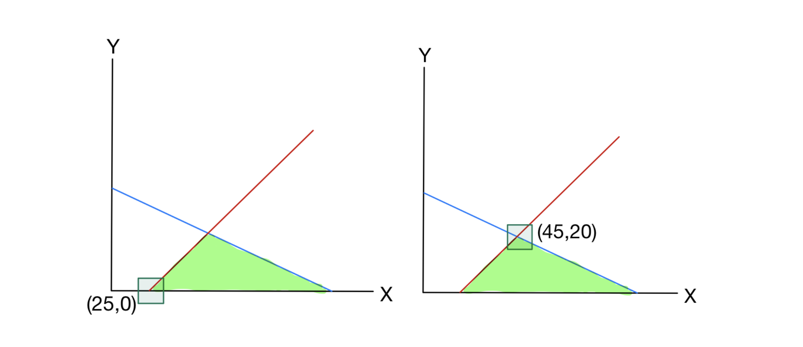

1. Introduction: 초기 사전(Initial Dictionary)의 실현 가능성
- 이번 포스트에서는 선형계획법(Linear Programming, LP)을 풀기 위한 2단계 심플렉스 알고리즘(Two-Phase Simplex Algorithm)에 대해 다룹니다. 이전 강의에서는 심플렉스 알고리즘의 기본적인 동작 원리를 배웠습니다. 하지만, 항상 알고리즘을 즉시 시작할 수 있는 것은 아닙니다. 문제가 주어졌을 때 기본적으로 설정하는 ’초기 사전(Initial Dictionary)’이 실현 불가능(infeasible)할 수 있기 때문입니다.
1.1 실현 가능한 초기 사전의 예
- 이전 강의에서 다루었던 다음 선형계획문제를 복습해 보겠습니다.
\[ \begin{aligned} \max \quad & z = 5x + 4y \\ \text{s.t.} \quad & 2x + 3y \le 150 \\ & 2x + y \le 70 \\ & x, y \ge 0 \end{aligned} \]
- 이 문제를 여유 변수(slack variables) \(s_1, s_2\)를 도입하여 표준형(Standard form)으로 변환하면 다음과 같은 초기 사전을 얻습니다.
\[ \begin{aligned} z &= 0 + 5x + 4y \\ s_1 &= 150 - 2x - 3y \\ s_2 &= 70 - 2x - y \end{aligned} \]
- 여기서 비기저 변수(non-basic variables)인 \(x, y\)를 \(0\)으로 설정하면, 초기 기저해(Initial solution)는 \((x, y, s_1, s_2) = (0, 0, 150, 70)\)이 됩니다. 이 해는 모든 변수가 \(0\) 이상이어야 한다는 비음 제약조건(\(x, y, s_1, s_2 \ge 0\))을 만족하므로 실현 가능한(feasible) 사전입니다. 이는 우변의 상수항(150, 70)이 모두 양수였기 때문에 가능했습니다.
1.2 실현 불가능한 초기 사전의 발생 (Motivation)
- 그렇다면 우변의 값이 음수인 제약조건이 포함된 경우는 어떨까요?
\[ \begin{aligned} \max \quad & z = x + 2y \\ \text{s.t.} \quad & 2x + 3y \le 150 \\ & -x + y \le -25 \\ & x, y \ge 0 \end{aligned} \]
- 마찬가지로 여유 변수 \(s_1, s_2\)를 도입하여 등식으로 변환해 봅니다.
\[ \begin{aligned} z &= 0 + x + 2y \\ s_1 &= 150 - 2x - 3y \\ s_2 &= -25 + x - y \end{aligned} \]
이 상태에서 초기 기저해를 구하기 위해 \(x=0, y=0\)을 대입하면, \(s_1 = 150\)이지만 \(s_2 = -25\)가 됩니다. 이는 \(s_2 \ge 0\)이라는 비음 제약조건을 명백히 위반합니다. 우리는 이러한 상태를 실현 불가능한 사전(infeasible dictionary)이라 부르며, 이 상태에서는 기존의 심플렉스 알고리즘을 바로 시작할 수 없습니다.
이 문제를 해결하기 위해 도입된 기법이 바로 2단계 심플렉스 알고리즘(Two-Phase Simplex Algorithm)입니다.
- Phase I: 실현 가능한 사전을 찾거나, 해당 LP가 근본적으로 실현 불가능함을 증명합니다.
- Phase II: Phase I에서 찾은 실현 가능한 사전을 바탕으로 최적해를 찾습니다.
2. Phase I: Finding a Feasible Dictionary
- 원래 문제의 실현 가능성을 평가하고 초기 사전을 구하기 위해, 우리는 새로운 보조 변수(auxiliary variable) \(t\)를 도입하여 완전히 새로운 보조 선형계획문제(Auxiliary LP)를 구성합니다.
2.1 보조 선형계획문제 구성
- 각 제약식에 \(-t\)를 추가하고, \(t\)를 최소화하는 문제로 만듭니다.
\[ \begin{aligned} \min \quad & t \\ \text{s.t.} \quad & 2x + 3y - t \le 150 \\ & -x + y - t \le -25 \\ & x, y, t \ge 0 \end{aligned} \]
- 이 보조 문제의 본질은 원 문제의 제약조건을 만족시키기 위해 얼마나 제약을 ’위반(\(t\))’해야 하는지를 측정하는 것입니다.
Theorem 4.1. 원래의 선형계획문제가 실현 가능하다는 것은, 위 보조 선형계획문제가 실현 가능하며 그 최적값이 0이라는 것과 필요충분조건이다.
Proof.
보조 문제는 \(t\)를 충분히 큰 값으로 설정하면 제약조건(\(\le 150\), \(\le -25\))을 항상 만족시킬 수 있으므로 무조건 실현 가능합니다.
보조 문제의 최적값이 \(0\)이라는 것은 최적해에서 \(t=0\)임을 의미합니다. \(t=0\)을 제약조건에 대입하면 원래 문제의 제약조건과 정확히 일치하므로, 이 해 \((x, y)\)는 원 문제의 실현 가능한 해가 됩니다.
2.2 Phase I 심플렉스 연산
- 이제 보조 문제를 표준형으로 바꾸고 사전을 구성해봅시다. 목적 함수는 \(t\)를 최소화하는 것이지만, 심플렉스 꼴로 맞추기 위해 극대화 문제인 \(z_{aux} = -t\)로 생각할 수 있습니다.
\[ \begin{aligned} z &= -t \\ s_1 &= 150 - 2x - 3y + t \\ s_2 &= -25 + x - y + t \end{aligned} \]
- 이 사전 역시 여전히 \(x=y=t=0\)일 때 \(s_2 = -25\)로 실현 불가능합니다. 하지만 \(t\)라는 변수가 존재하므로, 의도적으로 \(t\)를 기저 변수로 만들고, 가장 음수 값이 큰 기본 변수(\(s_2\))를 비기저 변수로 내보내는 특수한 피벗(Pivot)을 수행합니다.
[Step 1] \(t\)를 좌변으로 이동시키기 위한 행 연산
두 식을 빼서 \(t\)를 소거해봅시다. \[s_1 - s_2 = (150 - (-25)) - 2x - x - 3y - (-y) + t - t\] \[s_1 - s_2 = 175 - 3x - 2y\]
따라서 \(s_1 = 175 - 3x - 2y + s_2\)가 됩니다.
이제 \(s_2\) 식을 \(t\)에 대해 정리하여 \(t\)를 좌변으로, \(s_2\)를 우변으로 보냅니다. \[t = 25 - x + y + s_2\]
이를 목적함수 \(z = -t\)에 대입하면: \[z = -(25 - x + y + s_2) = -25 + x - y - s_2\]
새롭게 얻은 사전은 다음과 같습니다. \[ \begin{aligned} z &= -25 + x - y - s_2 \\ s_1 &= 175 - 3x - 2y + s_2 \\ t &= 25 - x + y + s_2 \end{aligned} \]
이제 비기저 변수 \(x=y=s_2=0\)을 대입하면 \(s_1=175, t=25\)로 모든 변수가 양수가 되어 실현 가능한 사전이 되었습니다. 이제 정상적인 심플렉스 알고리즘을 수행할 수 있습니다.
[Step 2] 정상적인 심플렉스 피벗 수행
목적 함수 \(z = -25 + x - y - s_2\)에서 \(x\)의 계수가 양수(\(+1\))이므로, \(x\)를 기저 변수로 진입시킵니다. \(x\)를 얼마나 증가시킬 수 있는지 확인합니다.
- \(s_1\) 식에서: \(x \le 175 / 3\)
- \(t\) 식에서: \(x \le 25 / 1\)
최소 허용치인 \(\min\{\frac{175}{3}, 25\} = 25\)를 선택합니다. 따라서 \(t\)가 비기저 변수로 내려갑니다 (즉 \(t=0\)).
\(t\) 식을 \(x\)에 대해 정리하면: \[x = 25 - t + y + s_2\]
이를 \(s_1\)과 \(z\)식에 대입(행 연산 적용)합니다. \[ \begin{aligned} s_1 &= 175 - 3(25 - t + y + s_2) - 2y + s_2 \\ &= 175 - 75 + 3t - 3y - 3s_2 - 2y + s_2 \\ &= 100 + 3t - 5y - 2s_2 \end{aligned} \]
\[ \begin{aligned} z &= -25 + (25 - t + y + s_2) - y - s_2 \\ &= -t \end{aligned} \]
최종 Phase I 사전은 다음과 같습니다. \[ \begin{aligned} z &= -t \\ s_1 &= 100 + 3t - 5y - 2s_2 \\ x &= 25 - t + y + s_2 \end{aligned} \]
목적 함수에 양수 계수가 없으므로 현재 사전은 최적입니다. 보조 문제의 최적값이 \(z = -t = 0\)이므로 원 문제는 실현 가능함이 증명되었습니다. 이제 보조 변수 \(t\)를 제거하고 얻은 \(s_1, x\)의 식을 Phase II의 초기 사전으로 사용합니다.
3. Phase II: Running the Simplex Method
- Phase I에서 \(t\)를 제거하여 얻은 실현 가능한 제약식 사전은 다음과 같습니다. \[ \begin{aligned} s_1 &= 100 - 5y - 2s_2 \\ x &= 25 + y + s_2 \end{aligned} \]
3.1 목적 함수 복원
- Phase II에서는 보조 목적 함수가 아닌 원 문제의 목적 함수 \(z = x + 2y\)를 사용해야 합니다. 이 목적 함수를 비기저 변수(\(y, s_2\))만으로 표현하기 위해, 방금 구한 \(x\) 식을 대입합니다.
\[ \begin{aligned} z &= (25 + y + s_2) + 2y \\ &= 25 + s_2 + 3y \end{aligned} \]
- 이제 Phase II를 시작하기 위한 완전한 첫 번째 실현 가능한 사전(first feasible dictionary)이 완성되었습니다.
\[ \begin{aligned} z &= 25 + s_2 + 3y \\ s_1 &= 100 - 2s_2 - 5y \\ x &= 25 + s_2 + y \end{aligned} \]
- 이 사전에서의 초기 기저해는 \((x,y) = (25,0)\), \((s_1,s_2) = (100,0)\) 입니다.
3.2 Phase II 최적화 수행
현재 목적 함수 \(z = 25 + s_2 + 3y\)에서 변수 \(y\)의 계수가 양수(\(+3\))이므로 \(y\)를 기저 변수로 진입시킵니다.
\(y\)는 \(s_1\) 식에서 \(100/5 = 20\)까지 증가시킬 수 있습니다. 따라서 \(s_1\)이 비기저 변수가 됩니다.
\(s_1\) 식을 \(y\)에 대해 풀면: \[5y = 100 - s_1 - 2s_2 \quad \implies \quad y = 20 - 0.2s_1 - 0.4s_2\]
이를 \(x\)식과 \(z\)식에 대입합니다. \[ \begin{aligned} x &= 25 + s_2 + (20 - 0.2s_1 - 0.4s_2) \\ &= 45 - 0.2s_1 + 0.6s_2 \end{aligned} \]
\[ \begin{aligned} z &= 25 + s_2 + 3(20 - 0.2s_1 - 0.4s_2) \\ &= 25 + s_2 + 60 - 0.6s_1 - 1.2s_2 \\ &= 85 - 0.6s_1 - 0.2s_2 \end{aligned} \]
최종 사전:
\[ \begin{aligned} z &= 85 - 0.6s_1 - 0.2s_2 \\ y &= 20 - 0.2s_1 - 0.4s_2 \\ x &= 45 - 0.2s_1 + 0.6s_2 \end{aligned} \]
- 목적 함수의 모든 변수 계수가 음수가 되었으므로, 이 사전은 최적(Optimal)입니다.
- 최적해는 비기저 변수를 \(0\)으로 두었을 때 얻어지는 \((x,y) = (45, 20)\), 최적값은 \(z = 85\)입니다.
4. Geometry (기하학적 해석)
- 이러한 대수학적인 단계들이 실제 좌표평면상에서 어떻게 이동하는지 시각적으로 이해해 봅시다.
4.1 초기 실현 불가능 영역

- 가장 처음 심플렉스를 시도했던 \((x,y)=(0,0)\)은 제약조건 \(-x+y \le -25\)를 만족하지 못해 실현 가능 영역(녹색 부분) 바깥에 위치합니다. 따라서 여기서부터는 모서리(가장자리)를 타고 이동하는 심플렉스 탐색을 시작할 수 없습니다.
4.2 Phase I에서 Phase II로의 전환 및 최적해 탐색

- Phase I의 보조 문제를 푸는 과정은 사실 이 외부의 점 \((0,0)\)에서 출발하여 어떻게든 실현 가능한 다면체(Polyhedron)의 꼭짓점 위로 올라타기 위한 과정이었습니다. 그 결과 도달한 점이 바로 좌측 그래프의 \((25,0)\)입니다.
- 이후 Phase II에서는 다시 원래의 목적 함수를 이정표 삼아 모서리를 타고 이동하였고, 마침내 우측 그래프의 \((45,20)\)에서 탐색을 멈추고 최적해를 확정지었습니다.